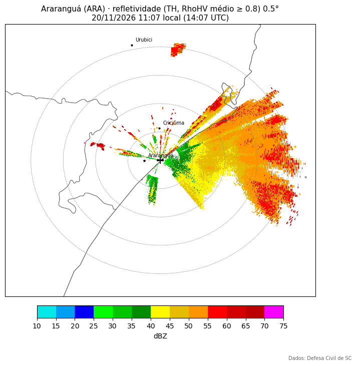
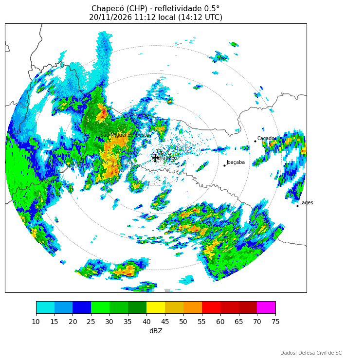

Araranguá (Defesa Civil SC) · refletividade, elevação mais baixa
69 quadros, de 20/11 03:15 local · 06:15 UTC a 20/11 11:07 local · 14:07 UTC.

Chapecó (Defesa Civil SC) · refletividade, elevação mais baixa
80 quadros, de 20/11 03:18 local · 06:18 UTC a 20/11 11:12 local · 14:12 UTC.